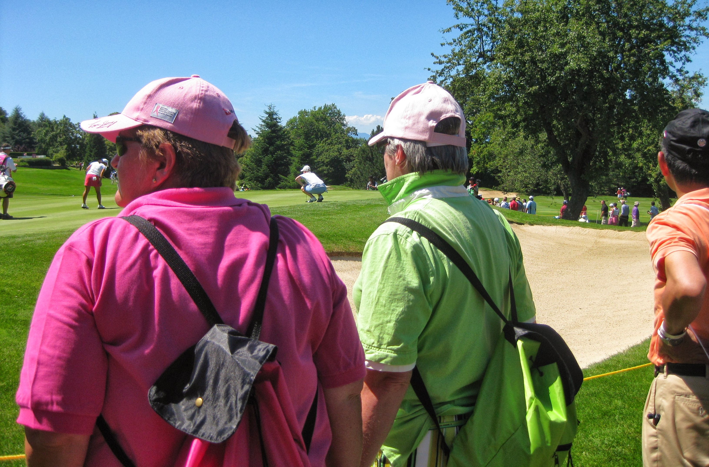
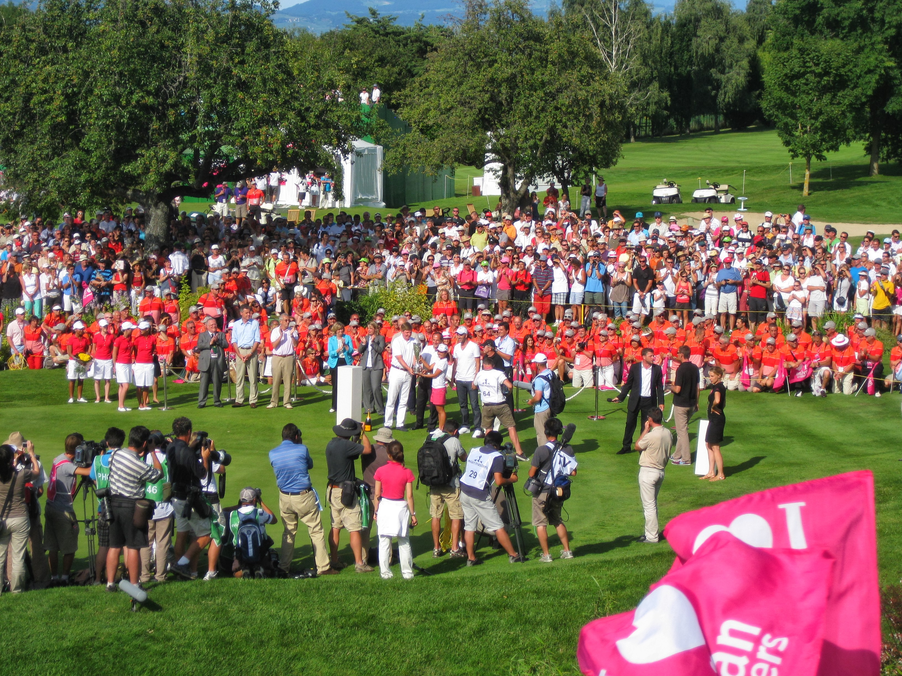
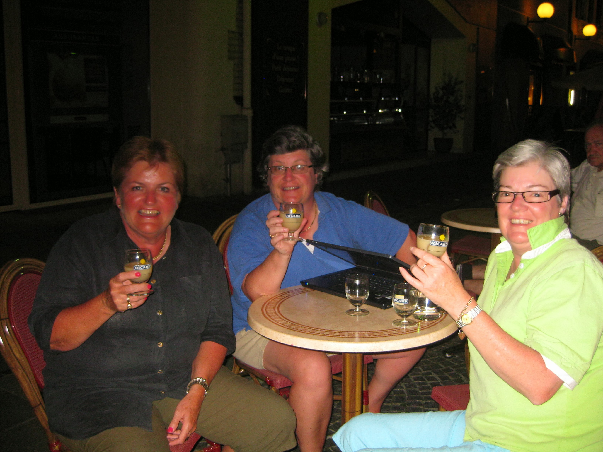

|
|
|
Evian Masters - Sunday July 26th - Day 4
Up at Place Annika Sorenstam the leaders flags today were Y Ddraig Goch for Becky, Korean (for Inky) and Swedish (for Sophie). Becky was last in so she was first out in the last but one group with Cristie Kerr. Sophie and Inky were last out. From my usual shady spot down the left side of the first hole I watched Morgan Pressel hit her tee shot into the left rough. Her second wasn't too bad but came up short and left. Her delightful response was a loud "F**k You". Charming. Dave Brooker was not wearing his moonboot thing today. Tutta was playing with Jelly. Her Mum, whom she looks a lot like, was out and about in her Nike wear. Graham Matthew's feet were not well enough for him to caddie for Catriona. Karine Icher had ditched the dresses and gone back to shorts and top. Wie and Ochoa were in the same group. Brittany Lincicombe was sitting on a chair outside the ropes, headphones in, listening to her ipod before teeing off.
{kind=link}
The two marshalls on the 1st reminded me of Tweedledum and Tweedledee. They couldn't be walking marshalls due to their size. They spent their time chatting to each other in the left rough, shaking hands with the walking marshalls as they came through. The golfers were an unwanted intrusion in their day. It was a real crimp in their day when someone hit it way right and they had to go look for it. More than once they had to be guided to the ball by the crowd.
Watched Wie and Lorena play through the 6th and then headed back to the 1st tee to see Brew tee off. I wished her good luck as she made her way to the tee. Previous days she said thanks and gave me a big smile. Today she mumbled her thanks and her smile was very strained, obviously very nervous.
Went for my usual liquid lunch in the skybox. Having consumed a suitable quantity of Veuve Cliquot Rose I caught up with Ai Miyazato and Karrie Webb, teeing off at the 6th. It's not easy to get to the 6th green so headed off down the 7th fairway to await their arrival. Didn't bother going all the way to the 7th green, going straight to the back of the par 3 8th green.
Paula Creamer attempted to make birdie there and failed. Karrie also blew a birdie chance. Becky and Kerr both hit lovely shots into the 8th green, both getting birdies. Brew needed hers as she was three over for the day having bogeyed three in a row from the second. None of us wanted to trog up the hill to the upper section of the course so after Inky (bogey) and Sophie (par) had played the 8th we headed over towards the 14th green / 15th tee area to wait for the leaders to come back around. Na Yeon Choi and Yuko Mitsuka both made a real mess of the 14th. Mitsuka was in the right geenside bunker having shortsided herself whilst Choi was left of the green in the rough in a tough spot. Both got bogeys.
 Alfie was next up playing with Paula Creamer. Both made par as did Karrie and Ai-chan who were next. Becky hit her tee shot into Na Yeon Choi territory but she seemed to hit a lovely chip shot onto the green to give herself a chance to save par. Unfortunately she missed the par put and even worse missed the short bogey put. Double on the card and chances of a win or even a top 10 looking distant. Watched Soph and Inky make their pars on 14 and then set off back to try and find a spot up in the Skybox or grandstand.
{kind=link}
I was late making it into the Skybox. It was standing room only but was consoled by the fact that the Veuve Cliquot Rose was still flowing. Alfie hit a terrific second shot into the green and had an eagle putt which she holed and immediately saluted the grandstand crowd with a huge fist pump. Paula Creamer almost holed out from the right hand side greenside bunker and ended up on her knees in the sand. She left herself a very short almost tapin birdie but she missed it.
Ai-chan laid up on 18 and had a non gimme birdie put which she nailed to get to 14 under. Advantage Sophie who had got her drive into the fairway. She hit a good second shot and ended up on the green with an eagle putt of about 20 feet. She hit a great eagle put which would have won her the tournament but it stopped just a smidgin short. Playoff.
Both players were driven back to the 18th tee. Only slight downer was that the Veuve Cliquot Rose had run out. I had to switch to white. Ai hit first, took driver and absolutely creamed it down the fairway. Sophie took a wood but pushed it right into the new green bunker nicknamed "The Green Monster" by the players. She had no choice but to lay up. Ai-chan went for the green and ended up in Creamer territory in the right greenside bunker.
Sophie hit her 3rd shot onto the green but not really close enough. Ai-chan hit a good bunker shot leaving herself a very makeable birdie putt. Sophie had to make her putt to put pressure on Ai-chan but hit a lousy one which never threatened the hole. Ai-chan made her birdie putt and won her first LPGA win and was very emotional about it. She was doused in Evian water by her fellow Japanese players.
 At this point they started handing out I love Evian Masters flags in the grandstand. I snaffled a couple. Ai-chan had been bagged by the TV companies to do interviews, so the presentation proper had to wait. The official artist arrived to complete his painting by adding the Japanese flag. A load of marshalls congregated behind the 18th green and the French crowd got all excited when a guy in white tshirt, jeans and a baseball cap appeared. It was Zinadine Zidane.
{kind=link}
Once Ai-chan had been given the trophy which was almost as big as her, the parachutists appeared with the lead one dropping in on the 18th fairway to drape the Japanese flag around Ai-chan before the Japanese anthem was played. It is more of a dirge than God save the Queen. Once the presentation was over I headed to get my courtesy bus back down to town. Passed Soph sat outside the clubhouse with a large glass of beer. Kent Nilsson seemed to be trying to cheer her up.
Back at centre ville found out that the Rue Nationale turns into an arts and crafts market on a Sunday. Most if not all of the caddies had already left to spend the night at Geneva airport before getting an early morning flight to the UK, so the bar was quite quiet. Had a couple of vin rouge before heading back to get refreshed for dinner.
Met up with the Aussie lasses for our usual vin rouge at L'Embuscade then headed back to last night's Italian, La Pizza. Still no seat outside. Final visit to L'Embuscade and we bought a round of Ricard, a first for all of us. The bar owner bought us another round of Ricard on the house. She wouldn't believe that I didn't have a French grandmother cos my French accent was so good!